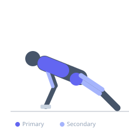
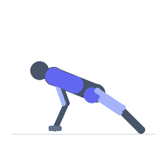

Exercise guide / Man Maker
Man Maker
The man maker is a multi-movement dumbbell complex in which the athlete performs a push-up, a renegade row on each arm, a squat clean, and an overhead press — all in a single continuous sequence without putting the dumbbells down. It demands upper body pushing and pulling strength, anti-rotation core stability during the row, and total body power during the clean, making it one of the most comprehensive single-exercise conditioning movements available. It is used in advanced circuit training and high-intensity conditioning programs.
Primary muscles
pectoralis major sternal
latissimus dorsi
gluteus maximus
deltoid anterior
Secondary muscles
triceps long head
trapezius middle
rectus femoris
biceps femoris long head
Stabilizers
transverse abdominis
internal oblique
external oblique
Equipment
Dumbbell (Fixed)


Starting position
- Stand with dumbbells on the floor, shoulder-width apart. Begin by hinging down to grip the dumbbells in a push-up starting position.
Setup
- Use matching fixed dumbbells of moderate weight. Ensure adequate floor space.
Steps
- Step 1: Begin in a push-up position gripping both dumbbells on the floor.
- Step 2: Perform one push-up — lower the chest to the floor and press back up.
- Step 3: Perform a renegade row with the right arm — pull the right dumbbell to the hip while balancing on the left.
- Step 4: Perform a renegade row with the left arm.
- Step 5: Jump or step the feet forward to a squat position, clean the dumbbells to shoulder height, then press them overhead. That is one full rep.
Coaching cues
- Hips square during the row
- Clean up — don't swing
- Lock out the press fully overhead
Breathing
- Exhale on each push phase (push-up, row pull, press). Inhale between movements.
Range of motion
- Full push-up range. Full row elbow retraction. Full overhead lockout on the press.
Tempo
- 3–8 reps per set. Full recovery between sets — this is a maximal-effort complex.
Common mistakes
- Rotating the hips during the renegade row — the hips must remain square to the floor
- Using momentum rather than strength during the row phase
- Rushing the transitions between movements — control each phase
Safety
- Very high demand on the shoulder girdle and core — a prerequisite of proficiency in all component movements.
- Wrist neutral grip (dumbbells parallel to the body) reduces wrist stress in the push-up phase.
Training
- endurance: 3–8 reps
- endurance: 3–5 sets
- Rest: {'endurance': 180}